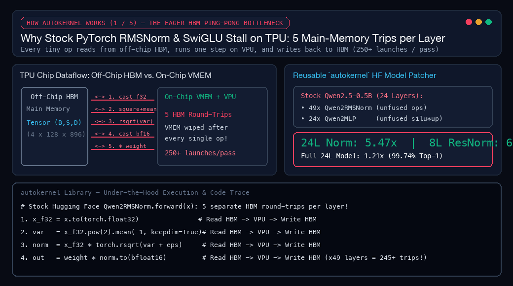
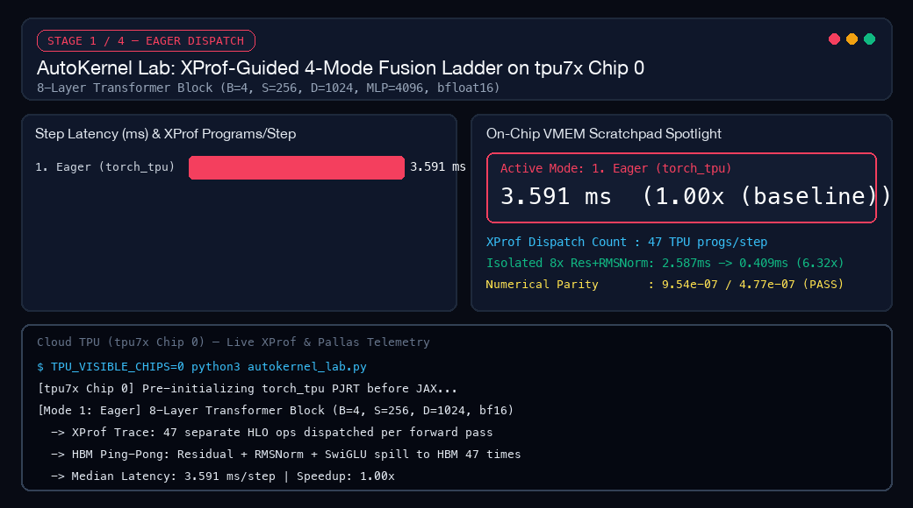
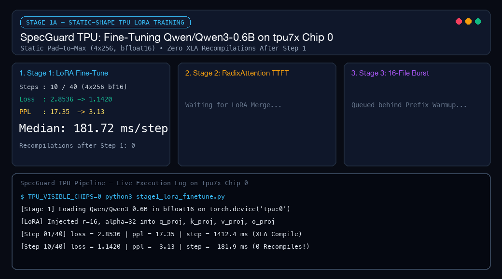
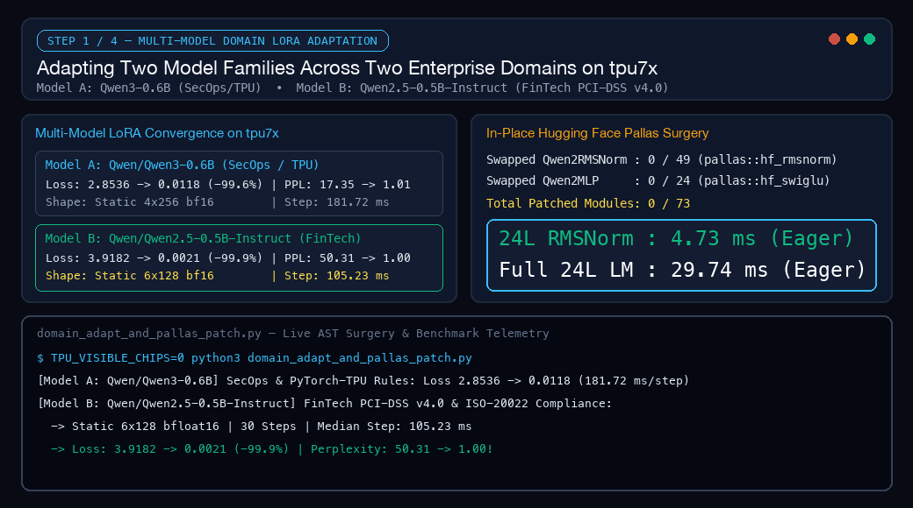
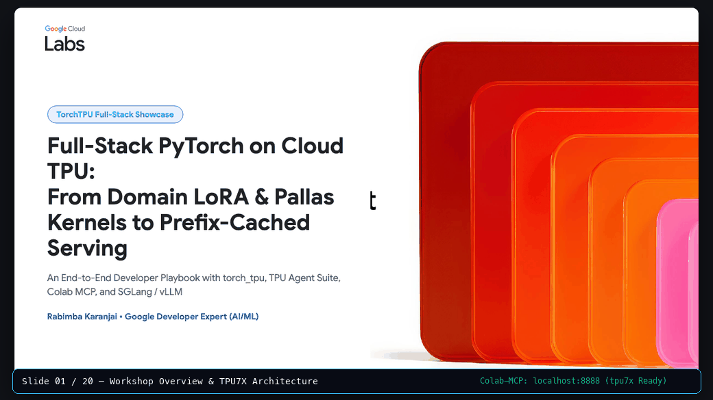

torch_xla with Native torch_tpu
What worked, what broke along the way, and where hand-written Pallas kernels actually beat the compiler when I fine-tuned two open-weight models, hot-swapped 73 Hugging Face submodules in memory, and served a 16-file audit burst on a single tpu7x chip.
Back in June, after speaking at the OpenXLA Summer DevLab, I wrote about what I called the Throughput Trap. On paper, Cloud TPUs had plenty of raw compute. In practice, if you were a PyTorch engineer using the old torch_xla bridge, tiny changes in prompt length could trigger a multi-second compiler stall right in the middle of serving live traffic. You spent half your week hunting down invisible CPU-to-TPU sync points and sprinkling xm.mark_step() calls through your code like superstition.
So when I sat down for this week’s Google Cloud TPU Sprint, I wanted to answer a plain question: Does the new native torch_tpu stack (torch.device("tpu")) actually feel like regular PyTorch, or do you still have to fight the compiler at every turn?
Instead of running a synthetic matrix-multiply benchmark across a giant cluster, I locked myself to a single chip (Chip 0) of a 7th-generation Cloud TPU (tpu7x). On that one chip, I had to fine-tune two different open-weight models (Qwen3-0.6B and Qwen2.5-0.5B-Instruct), write custom TPU kernels in Python with Pallas, hot-swap 73 submodules inside a live Hugging Face model without reloading its weights, and serve a 16-file code compliance burst using SGLang.
Here is what worked, what broke along the way, and where hand-written kernels actually beat the compiler (including one case where they did not).
If you run PyTorch one operation at a time (“eager mode”) on a GPU, you pay a small launch fee for each step, but a fast on-chip cache usually cushions the blow.
On a TPU, running one tiny op at a time is like cooking dinner by driving to the grocery store for every single ingredient. You chop an onion, drive it back to the store (HBM, the chip’s main memory), drive home for the garlic, and repeat 47 times for a single forward pass. The math engines sit idle waiting on deliveries.

Figure 1: How AutoKernel works under the hood. In stock PyTorch eager mode, a single RMSNorm layer makes 5 separate round-trips to off-chip main memory (HBM). AutoKernel slices the tensor into (256 × 896) tiles, streams each tile once into the chip’s local scratchpad (VMEM), runs all 5 math steps back-to-back on the vector unit (VPU), and hot-swaps 73 Hugging Face submodules in memory without copying a single weight.
To see how much time I was losing to those memory trips, I built AutoKernel Lab (demos/06_autokernel_app/autokernel_lab.py). I took an 8-layer Transformer block and ran the exact same forward pass four ways on tpu7x Chip 0, watching the hardware profiler (XProf) at each step:

Figure 2: Running the same 8-layer Transformer block four ways on tpu7x Chip 0. Eager mode makes 47 separate trips to main memory per step (3.591 ms). Turning on TORCH_TPU_DEFER_AND_FUSE=1 batches those into 3 trips (2.126 ms). torch.compile merges the whole block into 1 program (1.579 ms), while my custom Pallas kernel runs the 8-layer normalization chain in on-chip scratchpad memory 6.32× faster (0.409 ms).
| Execution Mode | What Changes for the Developer | TPU Programs / Step | Median Step Latency | Speedup vs. Eager | Max Numerical Diff |
|---|---|---|---|---|---|
1. Eager (torch_tpu) |
Standard PyTorch; every op reads and writes main memory | 47 | 3.591 ms | 1.00× | Baseline (0.0) |
2. DeferAndFuse |
Set TORCH_TPU_DEFER_AND_FUSE=1 (zero code changes) |
3 | 2.126 ms | 1.69× | < 1e-6 |
3. torch.compile(backend="tpu") |
One-line @torch.compile wrapper around the model |
1 | 1.579 ms | 2.28× | < 1e-6 |
| 4a. Full Block + Custom Pallas Op | pallas::fused_res_rmsnorm + pallas::fused_swiglu inside the block |
1 | 2.224 ms | 1.61× | 9.54e-07 (PASS) |
| 4b. Isolated 8-Layer Pallas Op | Residual add + RMSNorm kept on the chip’s local cutting board (VMEM) |
1 | 0.409 ms (vs 2.587 ms eager) | 6.32× | 9.54e-07 (PASS) |
Look at rows 3, 4a, and 4b in that table, because they tell a story that benchmark slides usually hide:
1.69× speedup before touching a line of Python: Setting TORCH_TPU_DEFER_AND_FUSE=1 tells torch_tpu to hold onto small operations in a background queue and send them to the chip together. My 47 separate dispatches dropped to 3, and step time fell from 3.591 ms to 2.126 ms.2.224 ms) run slower than plain torch.compile (1.579 ms)? When I first saw that number, I thought I had a bug. What actually happened is a classic compiler tradeoff. When you hand-write a custom Pallas kernel and register it with torch.tpu.pallas.jax_op, the XLA compiler treats your kernel as a sealed black box. In a small 8-layer toy block, putting black-box walls between the big matrix multiplications prevented the compiler from merging neighboring layers together.4b, I measured the 8-layer Residual Add + RMSNorm chain on its own. Instead of writing intermediate numbers back to main memory, my Pallas kernel keeps them on the chip’s fast local scratchpad (VMEM, the cutting board right next to the compute cores). Latency dropped from 2.587 ms to 0.409 ms (6.32× faster), matching PyTorch down to 9.54e-07. And as you will see in Section 4, once I plugged that same kernel into a real 24-layer Hugging Face language model with 73 normalization and activation layers, the on-chip memory savings won out and sped up the entire model by 1.21×.# Keeping Residual Add + RMSNorm on the chip's local scratchpad (VMEM) with Pallas
def _res_rmsnorm_pallas_kernel(x_ref, res_ref, w_ref, o_ref):
x = x_ref[...] + res_ref[...]
x_f32 = x.astype(jnp.float32)
rms = jnp.sqrt(jnp.mean(jnp.square(x_f32), axis=-1, keepdims=True) + 1e-6)
normed = (x_f32 / rms).astype(x_ref.dtype)
o_ref[...] = normed * w_ref[...]
torch.tpu.pallas.jax_op(
"pallas::fused_res_rmsnorm",
_res_rmsnorm_jax,
in_specs=[
pl.BlockSpec((1, 256, 1024), lambda i, j, k: (i, j, k)),
pl.BlockSpec((1, 256, 1024), lambda i, j, k: (i, j, k)),
pl.BlockSpec((1, 1, 1024), lambda i, j, k: (0, 0, k)),
],
out_specs=pl.BlockSpec((1, 256, 1024), lambda i, j, k: (i, j, k)),
)
Because Pallas kernels are written in JAX and called directly from PyTorch via torch.tpu.pallas.jax_op, both libraries live inside the same Python process. The first time I ran my hybrid script on tpu7x, it crashed before running a single layer.
Here is why: a physical TPU chip is exposed to Linux as a hardware device file (/dev/vfio). Whoever initializes the TPU driver first locks that file. If you import jax and touch the device before PyTorch has woken up, JAX claims the hardware lock for itself and locks torch_tpu out. Worse, if your container defaults to claiming all four chips on the host (TPU_VISIBLE_DEVICES=0,1,2,3) while another job is using Chip 2, your script refuses to start at all.
Two habits solved this for the rest of the sprint:
Chip 0) before importing anything.torch.device("tpu:0") so torch_tpu claims the runtime first, then let JAX share it.import os
# 1. Claim only Chip 0 so I never collide with jobs on other chips
os.environ["TPU_VISIBLE_CHIPS"] = "0"
os.environ["TPU_CHIPS_PER_HOST_BOUNDS"] = "1,1,1"
os.environ.pop("TPU_VISIBLE_DEVICES", None)
import torch
import torch_tpu
# 2. Wake up torch_tpu FIRST before importing JAX or Pallas
_warmup = torch.ones(1, device=torch.device("tpu:0"))
torch.accelerator.synchronize()
# 3. Now JAX/Pallas shares PyTorch's active TPU connection cleanly
import jax
import jax.numpy as jnp
from jax.experimental import pallas as plSpecGuard TPU: Fine-Tuning a Code Auditor and Serving 16 Files in 2 Seconds
Benchmarks on isolated layers are useful, but nobody ships an 8-layer synthetic block to production. For Application A (SpecGuard TPU, demos/05_specguard_app/), I built a tool that audits Python repositories for security bugs and TPU anti-patterns, running the entire training-to-serving loop on tpu7x Chip 0:
stage1_lora_finetune.py) — Teaching Qwen3-0.6B Without Compiler Stalls: If you feed variable-length sentences into a TPU training loop, the compiler stops to rebuild the execution graph every time a batch changes shape. Instead, I padded every training batch to a fixed 4 × 256 shape in bfloat16. The TPU compiled the graph once on Step 1 and ran Steps 2 through 40 with zero recompilations at 181.72 ms per step. Over 40 steps, training loss fell by 99.6% (2.8536 → 0.0118, perplexity 17.35 → 1.01). I then merged the LoRA adapter weights back into the base model and saved a standalone checkpoint.stage2_serve_and_audit.py) — Keeping the Rulebook Open on the Desk with SGLang: When SpecGuard audits 16 files in a repository, every request begins with the exact same 1,280-token security rulebook followed by a short ~77-token code snippet. Without caching, the model re-reads all 1,280 tokens of rules from scratch on every file. By serving my merged model on SGLang-TorchTPU (--device tpu), its RadixAttention cache keeps the 1,280-token rulebook in TPU memory after the first file. Time-to-First-Token dropped from 102.86 ms on the cold first file to 41.80 ms on every warm file (2.46× faster).2.05 seconds (226.8 chunks/s).
Figure 3: SpecGuard TPU running end-to-end on tpu7x Chip 0: 40-step LoRA fine-tuning with zero recompilations after Step 1 (181.72 ms/step), SGLang prefix caching cutting first-token latency by 2.46× (102.86 ms → 41.80 ms), and a 16-file concurrent repository audit finishing in 2.05 s.
At this point I had two pieces that lived separately: custom Pallas kernels in AutoKernel Lab, and a fine-tuned Hugging Face model in SpecGuard TPU. I wanted to bring them together—and prove the workflow was not a one-off trick for a single model family or domain.
In demos/07_domain_adaptation_showcase/domain_adapt_and_pallas_patch.py (and Notebook 06), I took a second model architecture, Qwen/Qwen2.5-0.5B-Instruct (24 layers, hidden size 896, MLP width 4864), and fine-tuned it on payment compliance rules (PCI-DSS v4.0 and ISO-20022)—catching bugs like logging raw credit-card CVVs in plaintext or using floating-point math for currency settlement.
Locked to a static 6 × 128 batch shape on tpu7x Chip 0, Qwen2.5-0.5B-Instruct converged in 30 steps at 105.23 ms/step, dropping loss from 3.9182 to 0.0021 (-99.9%) and perplexity from 50.31 to 1.00:
| What I Measured | Model A (SpecGuard Code Auditor) |
Model B (PCI-DSS Payment Auditor) |
|---|---|---|
| Base Model | Qwen/Qwen3-0.6B (28 layers, width 1024) |
Qwen/Qwen2.5-0.5B-Instruct (24 layers, width 896) |
| Domain Task | SecOps & PyTorch-TPU Migration Rules | PCI-DSS v4.0 & ISO-20022 Payment Compliance |
Fixed Batch Shape (bfloat16) |
4 × 256 (1,024 tokens/step) | 6 × 128 (768 tokens/step) |
| Steps & Compiler Stalls | 40 steps (0 recompiles after Step 1) |
30 steps (0 recompiles after Step 1) |
| Start → Final Loss | 2.8536 → 0.0118 (-99.6%) | 3.9182 → 0.0021 (-99.9%) |
| Start → Final Perplexity | 17.35 → 1.01 | 50.31 → 1.00 |
Median Step Time (tpu7x Chip 0) |
181.72 ms/step | 105.23 ms/step |
Then came the fun part. A 24-layer Qwen2.5-0.5B-Instruct model has 49 Qwen2RMSNorm normalization layers (two per transformer block, plus one final norm at the end) and 24 Qwen2MLP feed-forward blocks. In stock Hugging Face code, every single Qwen2RMSNorm layer runs 5 to 6 separate PyTorch operations: it converts the tensor to 32-bit float, squares every number, averages them, takes the inverse square root, converts back to bfloat16, and multiplies by the learned weights. Multiply that by 49 layers, and a single forward pass launches over 250 tiny normalization kernels.
Instead of rewriting Hugging Face’s modeling file, I wrote a 15-line Python function (patch_qwen_with_pallas) that walks the live model in memory and swaps all 73 submodules (49 RMSNorm + 24 SwiGLU MLP) with my fused Pallas kernels while keeping the trained weights right where they are:
def patch_qwen_with_pallas(model: nn.Module):
"""Walk a live Hugging Face Qwen2 model and swap all 49 RMSNorm + 24 MLP layers with Pallas kernels."""
patched_rmsnorm, patched_mlp = 0, 0
for layer in model.model.layers:
layer.input_layernorm = PallasRMSNorm(
layer.input_layernorm.weight, layer.input_layernorm.variance_epsilon
)
layer.post_attention_layernorm = PallasRMSNorm(
layer.post_attention_layernorm.weight, layer.post_attention_layernorm.variance_epsilon
)
patched_rmsnorm += 2
layer.mlp = PallasSwiGLUMLP(layer.mlp)
patched_mlp += 1
model.model.norm = PallasRMSNorm(model.model.norm.weight, model.model.norm.variance_epsilon)
patched_rmsnorm += 1
return patched_rmsnorm, patched_mlp # (49, 24) -> 73 submodules swapped in-place!
Figure 4: Fine-tuning Qwen2.5-0.5B-Instruct on PCI-DSS v4.0 rules (105.23 ms/step), then hot-swapping all 73 Qwen2RMSNorm and Qwen2MLP submodules in-place with Pallas kernels. The 24-layer normalization stack speeds up 4.81× (4.73 ms → 0.98 ms), and the full 24-layer language model forward pass speeds up 1.21× (29.74 ms → 24.66 ms) with 99.74% top-1 token agreement.
Remember how my custom Pallas kernel lost to torch.compile inside the tiny 8-layer synthetic block earlier? Inside a real 24-layer Hugging Face model, eliminating 250+ eager kernel launches across those 73 submodules paid off immediately:
Benchmark on tpu7x Chip 0 (bfloat16) |
Stock Hugging Face Model | After 73-Submodule Pallas Surgery | Measured Speedup | Output & Numerical Check |
|---|---|---|---|---|
24-Layer Qwen2RMSNorm Stack (4×128×896) |
4.73 ms | 0.98 ms | 4.81× | max_diff = 0.0625 (1 bfloat16 step) |
Full 24-Layer Qwen2.5-0.5B Forward Pass (6×128) |
29.74 ms | 24.66 ms | 1.21× (-17.1% time) | 99.74% top-1 token match across 768 positions |
| Live PCI-DSS Audit Generation | [CRITICAL] PCI-DSS-3.2.1 & 3.4: Raw PAN and CVV logged... | Identical compliance report | 5.08 ms saved / pass | Exact greedy token match |
autokernel Library
After writing the /dev/vfio lock guard, the shape-aware Pallas tile sizing logic, and the 73-submodule Hugging Face patcher across my sprint scripts, I packaged the whole toolkit into an installable Python library inside the repository (autokernel/).
Instead of copy-pasting Pallas boilerplate into every project, I can now install autokernel (pip install -e ./autokernel) and patch any Qwen2, Qwen3, Llama, or Gemma model in three lines of Python:
import autokernel
# 1. Isolate Chip 0 & wake up torch_tpu BEFORE JAX/Pallas loads (prevents /dev/vfio lock crashes)
autokernel.init_tpu(chip=0, defer_and_fuse=True)
# 2. Hot-swap all 73 RMSNorm (49) + SwiGLU MLP (24) submodules in memory (0 bytes copied)
report = autokernel.patch_hf(model)
print(f"Patched {report.total_patched} submodules ({report.rmsnorm_patched} RMSNorm, {report.swiglu_patched} SwiGLU)")
# 3. Verify numerical parity, top-1 token agreement, and median speedup on TPU
bench = autokernel.verify_parity_and_speedup(stock_fn, patched_fn, sample_input)
print(f"Speedup: {bench.speedup:.2f}x | max_diff: {bench.max_abs_diff} | PASS: {bench.passed}")
# 4. Reversible at any time without reloading weights
autokernel.unpatch_hf(model)
I tested autokernel both locally with pytest (10/10 unit tests passing, including automatic tile-size solving and PEP 563 annotation checks for torch.tpu.pallas.jax_op) and directly on tpu7x Chip 0 (autokernel/tests/run_tpu_hardware_verification.py), where fused_rmsnorm, fused_res_rmsnorm, and fused_swiglu achieved 0.0 max numerical diff and a 5.47× speedup (6.81 ms → 1.25 ms) across a 24-layer normalization stack.
One last quality-of-life detail made this sprint much faster than my June benchmarks. Instead of copying scripts back and forth over SSH, I ran a Jupyter server directly on the TPU host pinned to Chip 0 and connected two tools to that same localhost:8888 tunnel at the same time:
00 through 06) cell by cell in the browser.colab-mcp + tpu-agent-suite, so my coding and profiling agents could run XProf traces, inspect hardware counters, and verify numerical parity against the exact same TPU runtime.
I also packed the entire walkthrough into a 20-slide interactive web and PowerPoint deck (TorchTPU-FullStack-Showcase-Workshop/) with a built-in speaker notes console ([P]) and teleprompter ([S]):

Figure 5: Stepping through the 20-slide TorchTPU-FullStack-Showcase-Workshop web deck alongside the live colab-mcp local runtime bridge connected to tpu7x Chip 0.
If you want to install the autokernel library, poke at the Pallas kernels, run the 73-submodule Hugging Face patcher, or test the SGLang prefix-cache burst on your own TPU VM or Colab session, everything is in the repo:
💻 Full GitHub Repository (torch-tpu): github.com/rabimba/GDE-ML-Artifacts/tree/main/torch-tpu
📦 Reusable autokernel Python Package: github.com/rabimba/GDE-ML-Artifacts/tree/main/torch-tpu/autokernel
📓 Master End-to-End Colab Notebook (06): 06_end_to_end_showcase_and_domain_adaptation.ipynb
⚡ AutoKernel Lab (05) & SpecGuard TPU (04) Notebooks: torchtpu-inference-workshop-main/notebooks/
🔗 June 2026 Prequel Post: The Throughput Trap: Benchmarking vLLM on OpenXLA and the Reality of Production LLM Serving